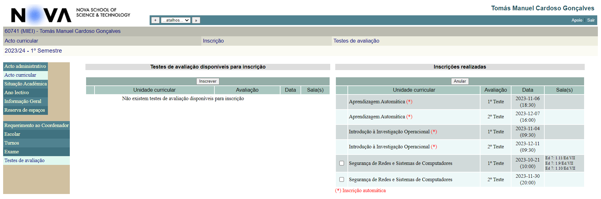

Lab 1: Good and Bad Designs
Good design
O exemplo de Bom design que eu escolhi foi a aba: “atalhos” do CLIP.

É uma funcionalidade bastante simples de utilizar e que demonstra que mesmo em sites/aplicações não tão bem desenhadas, conseguimos encontrar exemplos de features bastante úteis.
Esta aba permite nos escolher páginas específicas dentro o CLIP para aceder mais rapidamente.
Para aceder à página pretendida basta selecioná-la e clicar no botão assinalado.
Para adicionar um novo atalho, basta entrar na página pretendida e clicar no botão “+” localizado ao lado do painel de seleção de atalhos.
Depois só temos de definir um nome para o atalho e clicar no botão “criar”.
O novo atalho aparecerá no painel de seleção de atalhos.
Carregando no botão de ação (botão assinalado abaixo), enquanto “…atalhos…” está selecionado, leva à tela de gestão de atalhos, onde podemos modificar a ordem que os mesmo aparecem no painel de seleção de atalhos e eliminar atalhos que já não sejam necessários.

Bad design
O exemplo de Mau design que eu escolhi foi a máquina de encher garrafas de água no edifício II.
Apesar de ser extremamente útil, está máquina apresenta algumas falhas de design.
Por exemplo, o espaço disponível para colocar a garrafa de água por vezes não é suficiente, pelo que não é possível encher completamente algumas garrafas de água utilizadas pelos alunos.
Algumas garrafas de água são opacas, pelo que é difícil de saber quando se aproximam da capacidade máxima. Apesar do facto de que isto é um mau design da própria garrafa e não da máquina, o fabricante poderia ter tomado medidas para mitigar este problema, como por exemplo a instalação de uma luz perto da saida de água, para que seja possível ver o nível de água a partir da abertura do gargalo ou aumantar a área de coleta de água em excesso.
A existência do sinal de piso molhado e o pano no chão são os resultados destas falhas de design.